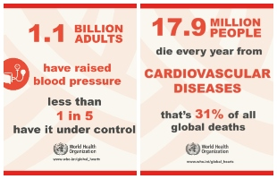
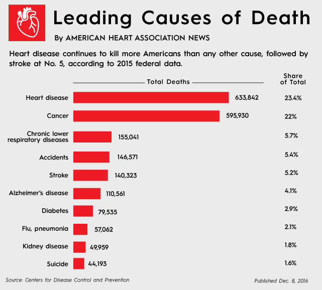

Statistics
Over several decades the leading cause of death in America has been heart related diseases and heart attacks. Almost half of the deaths in America are caused by illness seemed from the heart. What is even more shocking is that most of these fatalities are the result of cardiovascular diseases- 80% of which can be prevented by a change in lifestyle. Cardiovascular diseases include coroner artery disease, high blood pressure, cardiac arrest, arrhythmia, and many others. 1 in 4 people have suffered from these diseases or are currently suffering from these diseases. This product will not only benefit millions of America but hundreds of millions of people around the world. Many of these diseases go infected and culminate over time to cause more harm to the victims than if detected immediately. Many instances of diseases being discovered could be avoided with proper lifestyles and adequate medical attention. However, many cannot afford to purchase medical insurance because of its rising costs. Although there have been implementations of fiscal and expansionary policies to make healthcare more affordable, statistics show the the costs are on the rise and there are still millions of American unable to provide themselves with the basic requirement of visiting a doctor. Even with affordable care acts there are many people in this nation are unable to receive care because of the prices. The future of medicine lies in effective and inexpensive procedures that will not only help save lives immediately but will also aid in the strategy of prevention.
 